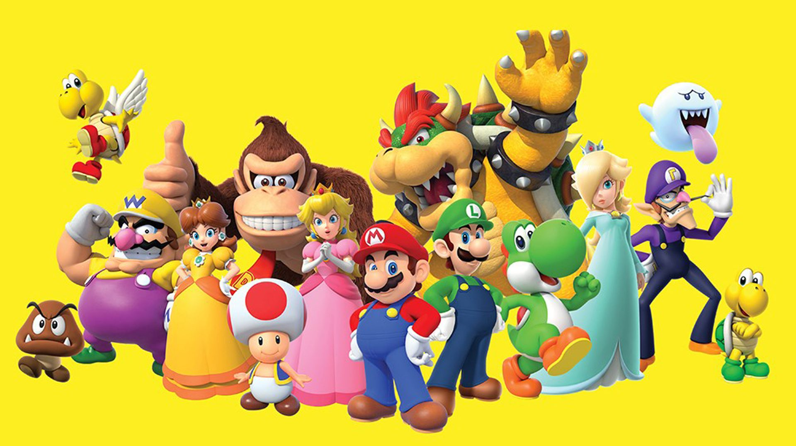

personagens principais

- Mario: O herói da franquia, conhecido por seu chapéu vermelho e habilidades
acrobáticas. Sempre pronto para resgatar a Princesa Peach.
- Luigi: Irmão de Mario, um pouco mais alto e muitas vezes mais medroso, mas igualmente heróico.
- Princesa Peach: Governante do Reino dos Cogumelos, frequentemente sequestrada por Bowser, mas também uma personagem jogável em vários títulos.
- Bowser: O grande vilão da franquia, líder dos Koopas e arqui-inimigo de Mario, sempre criando planos para dominar o Reino dos Cogumelos.
- Yoshi: Um dinossauro amigo de Mario que o ajuda em várias aventuras, sendo um dos personagens favoritos dos fãs.